אגוזים
TREE NUTS 9 יחידות
שמונים אחוז מהשקדים בעולם גדלים בעמק אחד בקליפורניה, בצורת עבודה אחת שסוגרת שוק.

הקשיו לא גדל על עץ, הוא תלוי מתחת לפרי, בתוך קליפה רעילה שרק ידיים מיומנות פותחות.

המוח שמבחוץ נראה כמו מוח האדם, ובפנים מכיל חומצות שומן שמזינות אותו.

העץ הלאומי של טקסס. פקאן גדל לאט, חי מאה שנה, ומניב את האגוז האמריקאי הילידי היחיד.

האגוז שמחייך. הקליפה שנפתחת לבד היא סימן לבשלות מושלמת, לא תוצאה של עיבוד.

שבעים אחוז מהאגוזים בעולם גדלים בחצי קילומטר סביב הים השחור. טורקיה שולטת בשוק.

האגוז היקר בעולם, עם הקליפה הקשה ביותר. רק מכונות מיוחדות יכולות לפתוח אותה.

גדל רק ביערות גשם בוחרים. לא ניתן לגידול מסחרי, כל קצירה היא ציד.

לא אגוז אלא קטנית. גדל מתחת לאדמה, נקצר כמו תפוח אדמה, ואחראי לאלרגיה הנפוצה בעולם.
פירות יבשים
DRIED FRUITS 15 יחידות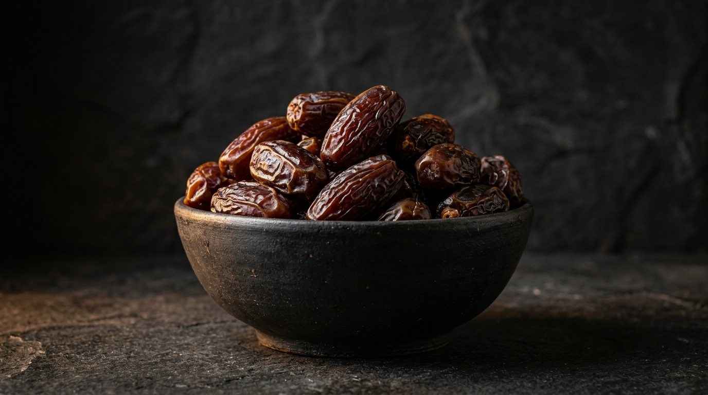
הפרי שהאכיל ציוויליזציות. מג'הול, דגלת נור, ברחי. כל זן הוא סיפור נפרד של אקלים ואדמה.
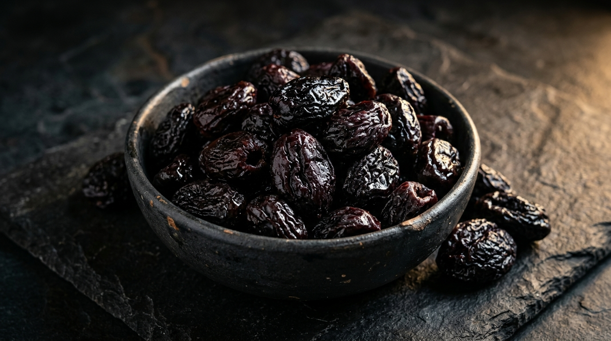
השזיף שנשאר. ייבוש מרכז את הסוכר, משמר את הסיבים, ויוצר את אחד הפירות המזינים בעולם.
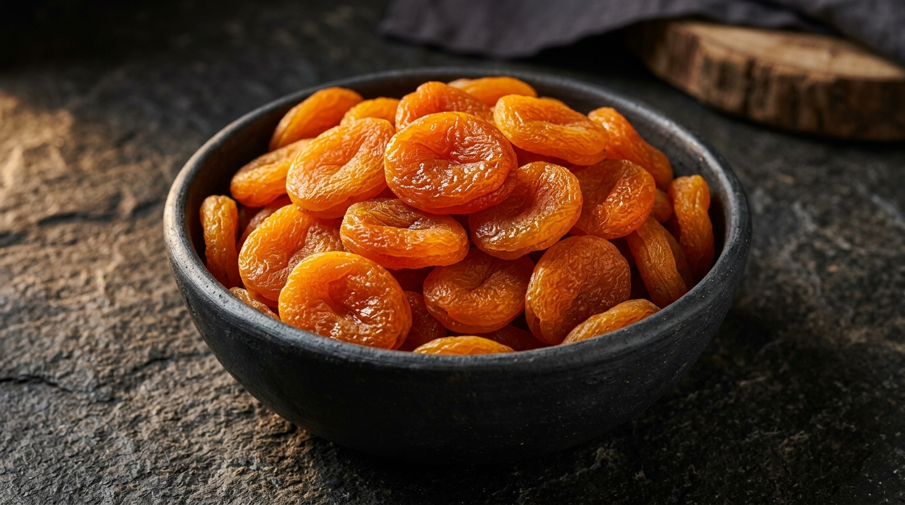
כתום עז בטורקיה, חום עמוק בפקיסטן. הצבע אומר הכל על אופן הייבוש ורמת הגופרית.
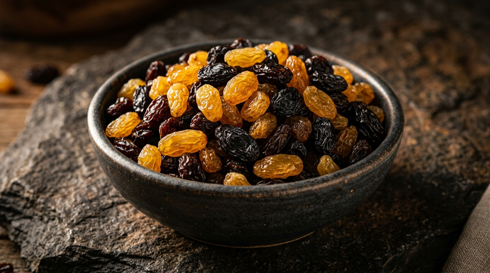
ענב שהחליט להישאר. Thompson Seedless מקליפורניה, Sultana מטורקיה. שני עולמות שונים לחלוטין.
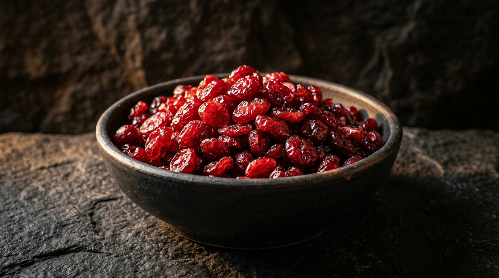
גדלות בביצות, נקצרות בשטפון. הקציר האמריקאי הכי דרמטי, והפרי שהפך לסמל בריאות עולמי.
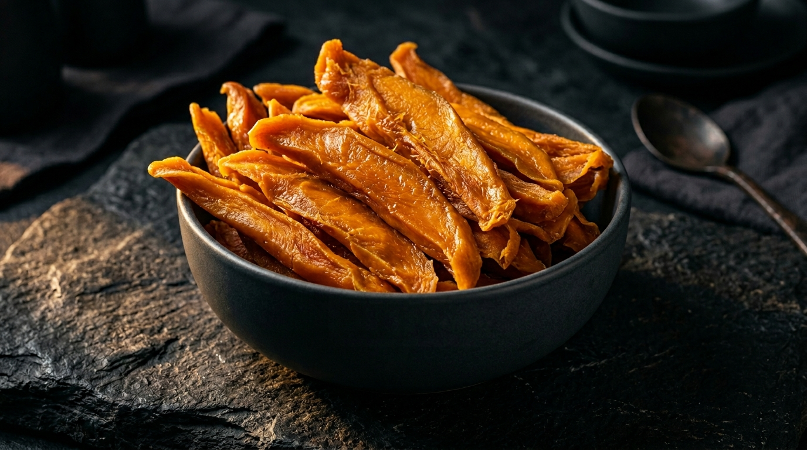
מלך הפירות הטרופיים בצורתו המרוכזת. ייבוש שמשמר את מתיקות הפרי הטרי עם חיי מדף ארוכים.
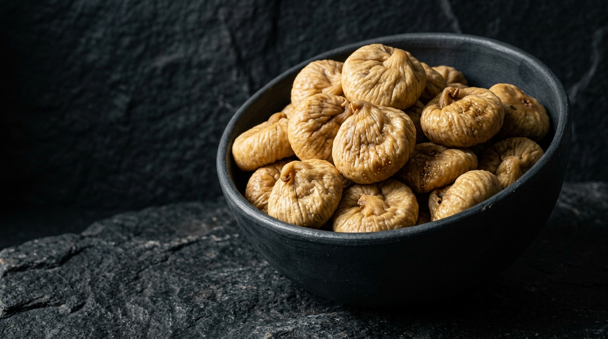
הפרי הקדום ביותר שהאנושות גידלה. מה שנראה כמו זרעים הם פרחים זעירים שמעולם לא נפתחו.
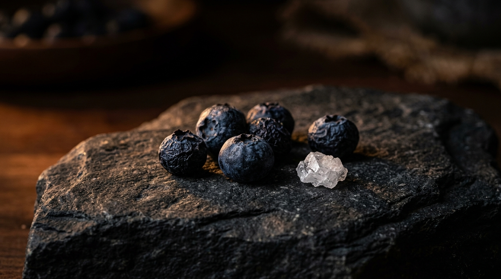
אחת מהסחורות הכי תנודתיות בשוק הפירות היבשים. עונת גידול קצרה, ביקוש גבוה כל השנה.
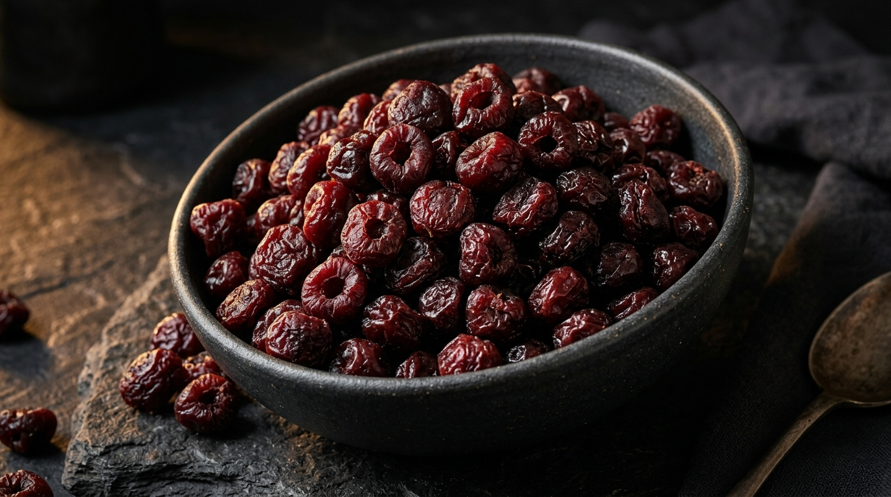
Montmorency או Bing. חמוץ מול מתוק. שתי אישיות שונות, שני שווקים שונים לחלוטין.

הוולפברי מניינגשיה. טבות גידול ייחודיות שרק אזור אחד בסין מאפשר. שוק הסופרפוד שמעולם לא הואט.

הפרי האינקאי שהגיע לאירופה. חמוץ-מתוק מיוחד, כמות גבוהה של ויטמין C, וביקוש עולה.

ייבוש השמש מרכז עשרה עגבניות לפיסת טעם אחת. מוצר ים תיכוני קלאסי עם ביקוש עולמי.
סופרפוד סיבירי עם ריכוז ויטמין C גבוה מלימון. גדל בתנאים קיצוניים, מכיל 190 חומרי תזונה.
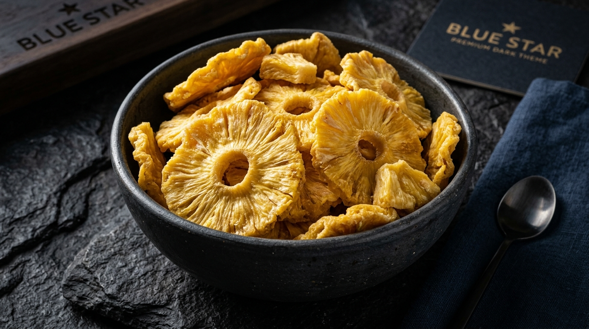
המתיקות הטרופית בפורמט נוח. ייבוש שמשמר את ברומלין, האנזים שמפרק חלבונים.
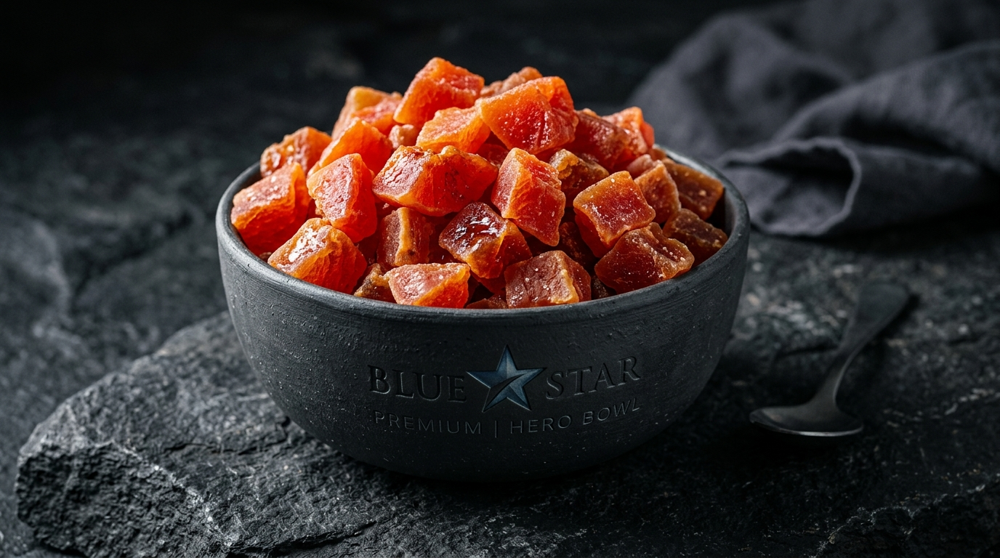
פרי שנקצר כל 9 חודשים. מכיל פפאין, אנזים פרוטאוליטי המשמש בתעשייה הרפואית.
זרעים
SEEDS 6 יחידות
הזרע הקדום ביותר שהאנושות גידלה לשמן. אתיופיה, הודו, מיאנמר. כל מקור עם פרופיל טעם שונה.

הזרע שסופג פי עשרה ממשקלו במים. אוכל של לוחמי האצטקים, הפך לסמל תרבות הסופרפוד.

אחד הגידולים העתיקים בעולם. הבד הראשון שהאדם ייצר. היום בעיקר שמן ואומגה 3.

גרעין שצמח בתוך פרי שנוצר לשמו. ריכוז מגנזיום ואבץ שמעטים מזונות אחרים מתקרבים אליו.

הפרח שעוקב אחרי השמש. כל ראש מכיל עד 2,000 זרעים, כל זרע ממוקם בסדרה פיבונאצ'י מושלמת.
הזרע שמרפא הכל חוץ ממוות. ממצאי ארכיאולוגיה בקברו של תות ענח' אמון. שוק הרפואה הטבעית.
תבלינים
SPICES 20 יחידות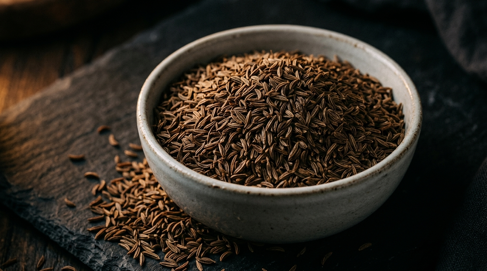
מלך התבלינים. ויאטנם, הודו, אינדונזיה. ASTA 550-600 קובע את הדרגה.

קורקומין 3% הוא הסטנדרט. שוק הבריאות שהכפיל את הביקוש בעשור.

התבלין השלישי היקר בעולם. גואטמלה השתלטה על השוק.

הודו מייצרת 70% מהתצרוכת העולמית. שוק תנודתי עם עלייה חדה.

True Cinnamon. שרי לנקה בלבד. שוק פרמיום עם הבדל מחיר של פי שלושה מקסיה.

טרי, מיובש, ג'ינג'רול מרוכז. בעיות MRL מסין מחייבות עירנות.

ספרד מול הונגריה. ASTA 80, 100, 120. ריכוז הצבע קובע הכל.

היקר בעולם. 200,000 פרחים לקילוגרם. איראן 90% מהייצור.

פרח לפני שנפתח. איי המלוכה של אינדונזיה.

מגידלת ביד, מואבקת ביד. מדגסקר אחראית ל-80% מהייצור.

כוכב בעל שמונה קרניים. ביקוש חריג מהתעשייה הרפואית לתמצית שיקאמיק.

המלח החמוץ של המזרח התיכון. ביקוש עולמי עם עליית המטבח הים תיכוני.
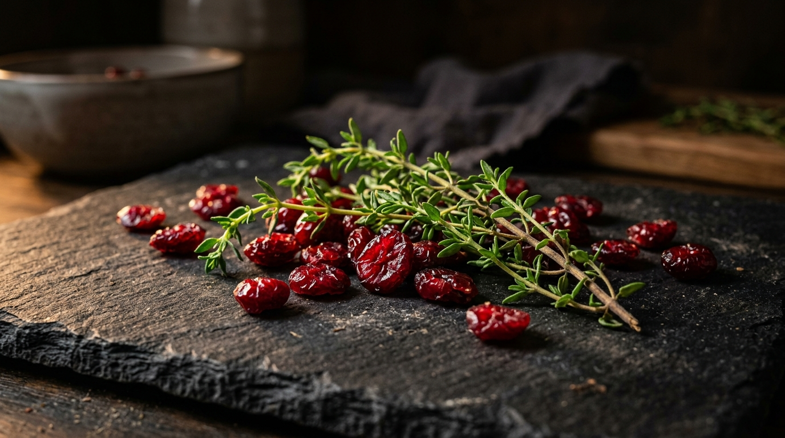
הפיצה שכבשה את העולם גררה אחריה גם את האורגנו.
בסיס ל-Zaatar, עשב הכבוד של לבנט.

סין מייצרת 80% מהשוק העולמי. פלייקס, גרגר, אבקה.

הזרע שטעמו כמו ליקריץ. מרכיב קלאסי בנקניקיות איטלקיות.
לחם השיפון של אירופה לא יכול בלעדיו. הולנד, מצרים.

ריח סירופ מייפל. משמש כמחקה טבעי בתעשיית המזון.
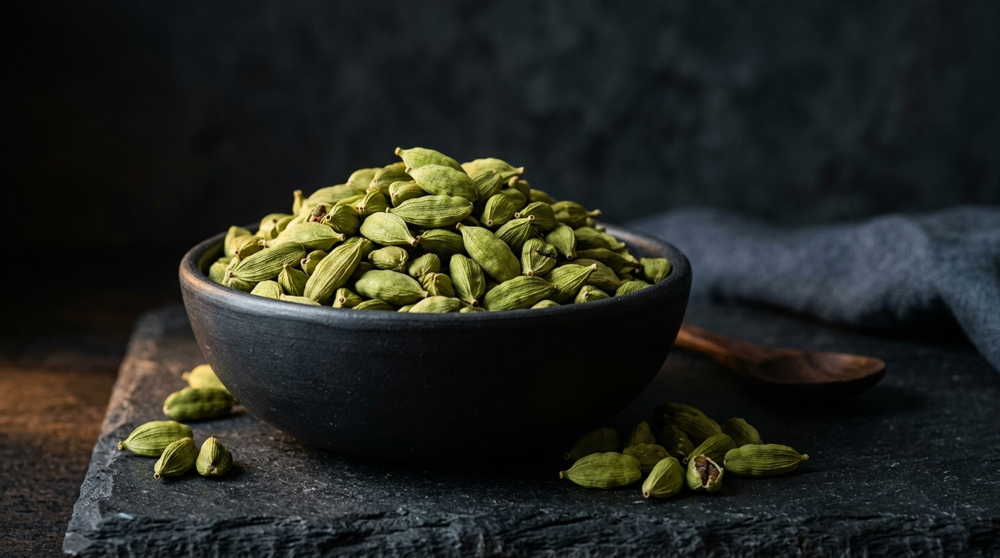
הגרגרים הכחולים הם הסיפור הכשר. בעיות רגולטוריות לא נגמרות.

סקוביל קובע הכל. מהיאלפנו הנוח עד לקרוליינה ריפר.
קטניות
LEGUMES 6 יחידות
הקטנית שהפכה למותג. Kabuli מול Desi. ביקוש עולמי שצמח 40% בעשור.

Red, Green, Black Beluga. כל צבע שוק נפרד. קנדה שולטת בייצור.

הקטנית שמאכילה את העולם. 80% מהיבול הולך לתעשיית מזון לבעלי חיים.
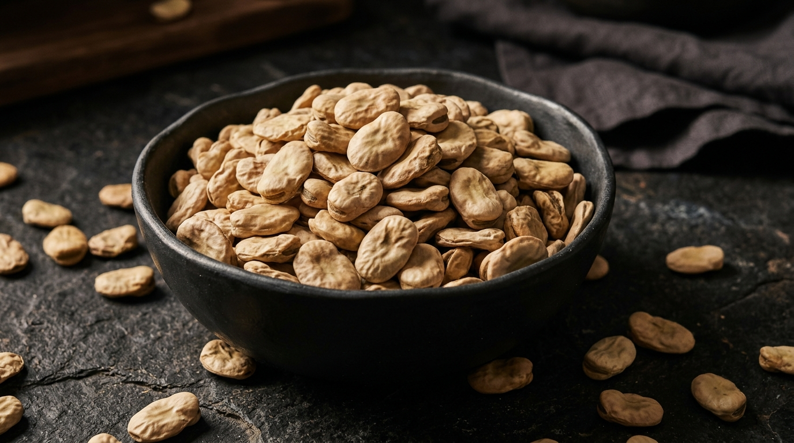
אחת הקטניות הקדומות ביותר. בסיס למטבח המזרח תיכוני ולתעשיית חלבון חדשה.

Split Peas לתעשיית מרקים. Whole Green לשוק הקמעונאי. כנדה מובילה.

Pinto, Navy, Kidney, Black. כל זן שוק נפרד, עונה נפרדת, לוגיסטיקה נפרדת.
דגנים
GRAINS 4 יחידות
אם כל הגרגרים. 7,000 שנות גידול אנדי. חלבון שלם מ-9 חומצות אמינו.
לא חיטה ולא דגן. קרובת משפחה של חמוציות. נטולת גלוטן, עשירה ברוטין.

הדגן שהאפריקאים חיו עליו. עמיד לבצורת, נטול גלוטן, מתפשט בשוק המערבי.
חיטה ירוקה שנשרפה בכוונה. תהליך ייחודי שמייצר טעם מעושן ועמוק.